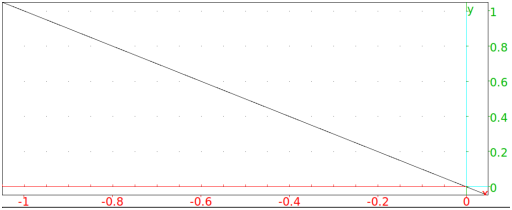

13.7.12 The exterior angle bisector: exbisector
The exbisector command finds exterior angle bisectors.
-
exbisector takes three arguments:
a,b,c, three points (which can also be given as a list).
- exbisector(a,b,c) returns and draws the bisector
of the exterior angle of the triangle determined by a,b and c;
a is the vertex of the angle, the opposite of the ray through
a and b determine one side of the angle and a and c determine the second side.
Example
Input:
exbisector(0,1,i)
Output:
